La idea de este proyecto es la de aplicar conceptos relacionados al análisis de series temporales y explorar algunos métodos de pronósticos.
Los datos con los que trabajaremos corresponden a una serie temporal de ventas reales de distintos ítem para la construcción que pertenecen a una misma familia o grupo de productos. Estos datos fueron registrados entre enero del 2006 y junio del 2008 y están conformado por 3263 observaciones que representan ventas diarias.
A fin de reducir la incertidumbre en los pronósticos vamos a trabajar con demandas acumuladas en el tiempo, es decir, vamos a utilizar ventas mensuales en vez de diarias. Además, como se trata de un grupo de productos y no de productos individuales serán pronósticos agregados. El efecto de la agregación en los pronósticos será la disminución del error ya que la serie resultante compensará las variabilidades.
El enfoque que vamos a abordar será el de Simulación de Modelos, esta metodología nos permitirá elegir el modelo más apropiado al comparar el error que cada uno de ellos obtenga.
Los pasos a seguir serán los siguientes:
Vamos a dividir la serie histórica (nuestros datos) en dos grupos: el grupo Train y el grupo Test.
Ajustaremos los modelos sobre el grupo Train.
“Pronosticaremos” los periodos correspondientes al grupo Test con cada uno de los modelos ajustados.
Calcularemos el error de cada método con respecto a los datos del grupo Test.
Elegiremos el modelo que obtenga el menor error.
Actualizaremos los parámetros del método elegido utilizando los datos de ambos grupos para pronosticar periodos futuros.
Los métodos que utilizaremos son los llamados cuantitativos intrínsecos. Estos se basan en modelar patrones pasados para proyectarlos en el tiempo apoyándose en la suposición de que el pasado puede extenderse hacia el futuro. A diferencia de los métodos cualitativos o cuantitativos extrínsecos, que utilizan variables externas y juicios de personas expertas en el negocio, aquí el éxito en el resultado solo depende de que tan bien los modelos interpreten la información que esconden los datos.
La idea de estos métodos es que nos sirvan de base para el desarrollo de otros más complejos. Los vamos a comparar entre si y veremos si los modelos complejos son mejores que los modelos simples, si esto no pasa entonces desarrollar un modelo de mayor complejidad no vale la pena. Dentro de este grupo vamos a probar:
Los modelos complejos que vamos a desarrollar son:
La exactitud de los modelos se medirá usando pronósticos genuinos, esto solo puede hacerse con datos que no hayan sido utilizados para entrenar los modelos, será nuestro grupo Test.
Para el cálculo de los errores vamos a utilizar dos métricas ampliamente utilizadas, el MAE y el MAPE:
\[MAE = \frac{1}{N}\sum_{t=1}^{N} \mid{Real_{t} - Pronóstico_{t}}\mid\]
\[MAPE = \frac{1}{N}\frac{\sum_{t=1}^{N} \mid{Real_{t} - Pronóstico_{t}}\mid}{Real_{t}}*100\]
Para comenzar con este proyecto vamos a cargar las librerías que vamos a necesitar para manipular y graficar los datos como así también la serie de ventas que analizaremos.
# Carga de librerías
library(tidyverse)
library(forecast)
library(lubridate)
library(tseries)
library(kableExtra)
library(formattable)
library(ggpubr)
library(zoo)
# Carga de datos
ventas <- read_csv('datos_ventas.csv')
ventas %>% head(5)| fecha | unidades |
|---|---|
| 02/01/2006 | 2088 |
| 02/01/2006 | 1480 |
| 02/01/2006 | 2270 |
| 02/01/2006 | 6275 |
| 03/01/2006 | 502 |
Antes de seguir avanzando debemos verificar si el tipo de dato para cada columna de la serie es correcto.
ventas %>% glimpse()
## Rows: 3,263
## Columns: 2
## $ fecha <chr> "02/01/2006", "02/01/2006", "02/01/2006", "02/01/2006", "03/…
## $ unidades <dbl> 2088, 1480, 2270, 6275, 502, 303, 299, 514, 1542, 90, 1012, …Vamos a modificar el tipo de dato del campo fecha por uno de tipo date.
ventas$fecha <- dmy(ventas$fecha)
ventas %>% glimpse()
## Rows: 3,263
## Columns: 2
## $ fecha <date> 2006-01-02, 2006-01-02, 2006-01-02, 2006-01-02, 2006-01-03,…
## $ unidades <dbl> 2088, 1480, 2270, 6275, 502, 303, 299, 514, 1542, 90, 1012, …A fin de compensar las variabilidades de ventas diarias, que es como han sido registrado nuestros datos, vamos a optar por acumularlas en meses.
ventas_mes <- ventas %>%
group_by(fecha = floor_date(fecha, "month")) %>%
summarize(unidades = sum(unidades))Veamos gráficamente como la serie de ventas mensuales es más estable con respecto a las ventas diarias.
# Ventas diarias
diaria <- ventas %>%
ggplot(aes(x = fecha,
y = unidades)) +
geom_line(color = 'steelblue') +
labs(title = 'Ventas Diarias',
x = 'Periodo',
y = 'Unidades') +
theme(axis.title.x = element_blank(),
plot.title = element_text(hjust = 0.5))
# Ventas mensuales
mensual <- ventas_mes %>%
ggplot(aes(x = fecha,
y = unidades)) +
geom_line(color = 'steelblue') +
labs(title = 'Ventas Mensuales',
x = 'Periodo',
y = 'Unidades') +
theme(plot.title = element_text(hjust = 0.5))
ggarrange(diaria, mensual, ncol = 1, nrow = 2)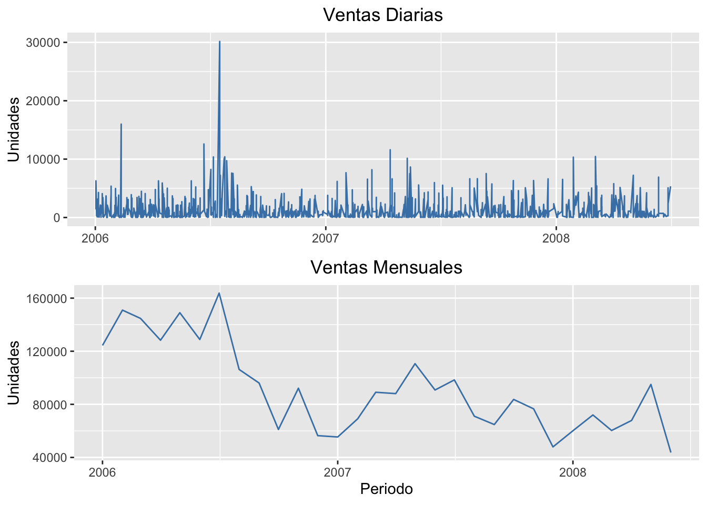
Los gráficos revelan muchas características y comportamientos como patrones, outliers y cambios a través del tiempo. Estas características deben ser incorporadas tanto como sea posible en los modelos de pronósticos, es por esto que utilizaremos diferentes gráficos para tratar de detectar que es lo que caracteriza a nuestros datos.
# Transformamos la serie a un time series object
ts_ventas <- ts(ventas_mes$unidades,
frequency = 12,
start = 2006)
autoplot(ts_ventas, color = 'steelblue') +
ggtitle('Ventas Mensuales') +
labs(x = 'Meses',
y = 'Unidades')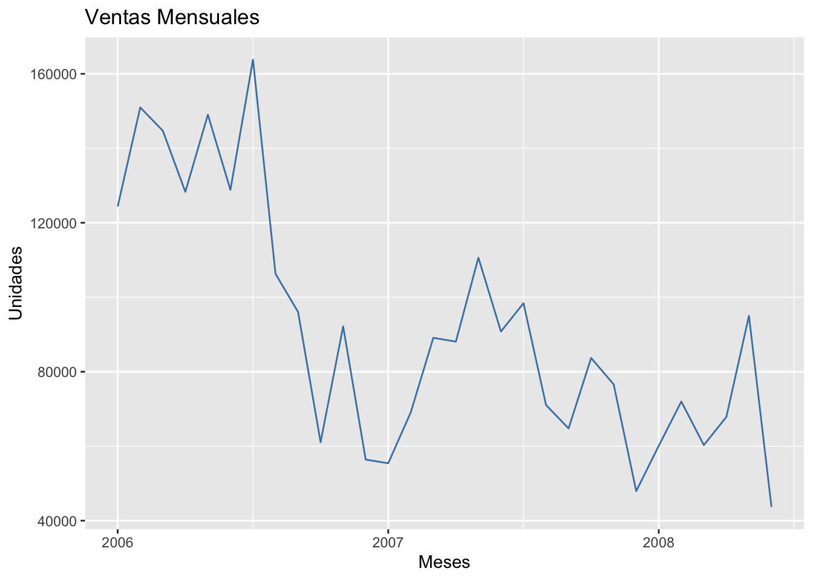
A través del gráfico podemos empezar a describir que características presentan los datos:
La serie comienza con un patrón horizontal durante el primer semestre del 2006, entra en una tendencia decreciente hasta enero del 2007. A partir de aquí tiene una tendencia positiva que dura pocos periodos (hasta abril del 2007) para luego volver a entrar un periodo de pendiente negativa hasta finales del 2017. Finalmente se observa un patrón de movimiento horizontal en el último semestre de la serie.
Con respecto a la estacionalidad no observamos ningún patrón a simple vista, de todas maneras vamos a realizar otros tipos de gráficos para descartar la presencia de la misma.
No se observa ningún valor atípico que sea extremadamente alto o extremadamente bajo, sin embargo vamos a hacer una prueba para descartar la presencia de outliers.
Los valores anormalmente grandes o pequeños, aquellos que se espera que no se repitan en el futuro suelen considerarse valores atípicos u outliers. Los outliers confunden el reconocimiento de patrones y, además, los métodos que utilizaremos no funcionan bien ante la presencia de estos, la idea es modificarlos para hacerlos más consistentes con el resto de las observaciones.
Es importante destacar que no es recomendable reemplazar outliers si no se los analiza en el contexto del negocio interpretando porqué ocurrieron. Para este casos práctico vamos a considerarlos como errores reemplazándolos por el valor sugerido por la función tsoutliers() del paquete forecast.
tsoutliers(ts_ventas)
## $index
## integer(0)
##
## $replacements
## numeric(0)La función aplicada considera que no hay valores atípicos en la serie. Al no conocer los detalles que generaron los datos y el contexto del negocio no podemos hacer un mayor análisis al respecto.
Utilizar gráficos estacionales nos permite observar en forma más clara si hay o no presencia de estacionalidad en la serie.
ts_ventas %>%
ggseasonplot(year.labels = TRUE,
year.labels.left = FALSE
) +
labs(title = 'Ventas Mensuales',
x = 'Meses',
y = 'Unidades')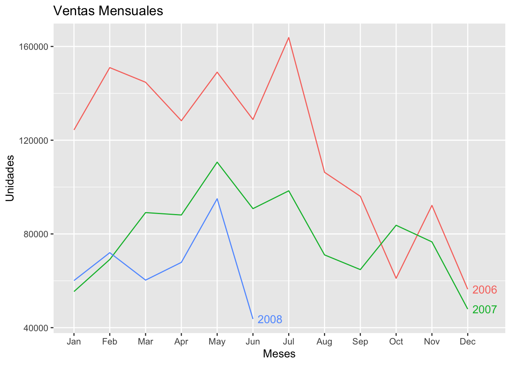
Podemos ver que existe un cierto comportamiento estacional:
Tenemos constantes caídas de ventas en enero, junio, septiembre y diciembre.
Tenemos constantes aumentos en febrero, mayo, julio.
Este gráfico prueba si las observaciones adyacentes están autocorrelacionadas, es decir, si hay correlación entre la observación 1 con 2, 2 con 3, 3 con 4 y así, esto se conoce como correlación de lag uno. Existirá autocorrelación si el coeficiente es significativamente distinto de cero, algo que se puede verificar observando si los picos sobrepasan el límite establecido por la prueba.
# Gráfico de autocorrelación
ts_ventas %>%
ggAcf(lag.max = 30) +
ggtitle('Función de Autocorrelación')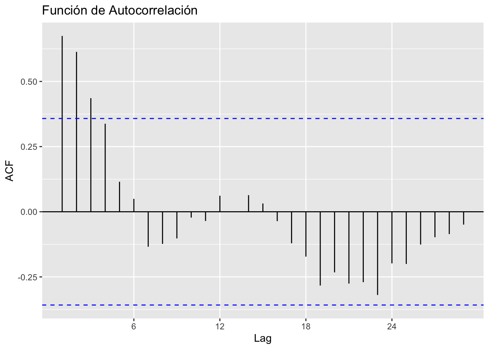
Cuando la serie presenta tendencia, la autocorrelación para desfasajes bajos tiende a ser grande y positiva porque las observaciones cercanas en el tiempo también son cercanas en tamaño pero a medida que aumenta el lag o desfasaje la autocorrelación disminuye. Se observa un poco de este comportamiento sobretodo en los primeros 6 lags de cuales los primeros tres son significativamente distintos de cero. Esto sugiere la existencia de una tendencia que no perdura en el tiempo.
Con respecto a la estacionalidad, la curva sinusoidal formada por todos los picos indica cierta presencia de la misma pero sin coeficientes significativos no podemos considerarla como tal.
Si bien no tenemos dudas de la existencia de tendencia en la serie, puede que dos ciclos y medio de datos (observaciones mensuales) dificulte entender si también existe estacionalidad. De todas maneras aplicaremos diferentes métodos que modelan y ajustan estos patrones.
Una práctica común para evaluar los modelos de pronósticos es dejarnos las últimas observaciones para comparar lo pronosticado con lo real. Como nosotros estamos interesados en hacer pronósticos a corto plazo vamos a separar la serie en dos dejándonos las últimas 6 observaciones (todas aquellas que corresponden al primer semestre del 2008) para comparar resultados y luego pronosticaremos el segundo semestre de ese mismo año.
# Grupo Train
ts_train <- window(ts_ventas,
start = c(2006, 1),
end = c(2007, 12))
# Grupo Test
ts_test <- window(ts_ventas,
start = c(2008, 1))# Grupo Test
ts_test
## Jan Feb Mar Apr May Jun
## 2008 60108 72000 60296 67868 95008 43701
Los modelos básicos que utilizaremos son los siguientes:
Método del Promedio: el pronóstico de los valores futuros es igual al promedio de los datos históricos.
Método Naïve: el pronóstico de los valores futuros es igual al valor de la última observación.
Método Naïve Estacional: el pronóstico de los valores futuros es igual al valor de la última observación para el mismo periodo pero del año anterior. Así el pronóstico para el mes de enero es igual al valor de enero del año anterior.
Método Drift: básicamente consiste en dibujar una recta entre la primera y la última observación de la serie y extrapolarla en el tiempo.
# Ajuste de pronosticos basicos
mean_fc <- meanf(ts_train, h = 6)
naive_fc <- rwf(ts_train, h = 6)
snaive_fc <- snaive(ts_train, h = 6)
drift_fc <- rwf(ts_train, h = 6, drift = TRUE)# Gráficos de pronosticos basicos
autoplot(ts_train, series = 'Train') +
autolayer(mean_fc$mean, series = 'Mean') +
autolayer(naive_fc$mean, series = 'Naïve') +
autolayer(snaive_fc$mean, series = 'SNaïve') +
autolayer(drift_fc$mean, series = 'Drift') +
guides(colour = guide_legend(title = "Serie")) +
labs(title = 'Métodos Simples',
subtitle = 'Ajuste de Modelos (Train)',
x = 'Mes',
y = 'Unidades') +
scale_color_manual(values = c('black',
'red',
'orange',
'violet',
'steelblue'))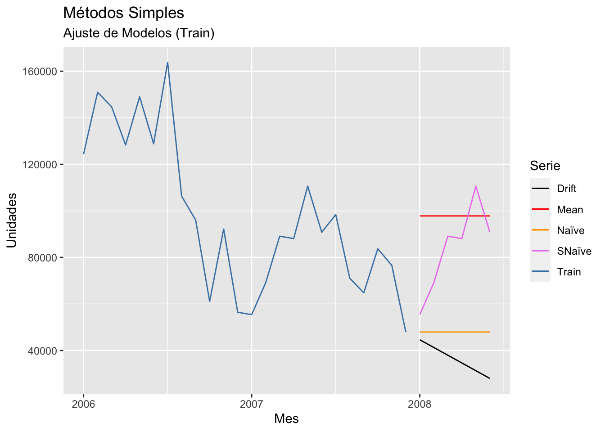
En este punto utilizaremos el set de pruebas (Test) que definimos en un apartado anterior. El resumen de los resultados para los métodos simples es el siguiente:
# Gráfico de errores de pronosticos basicos
autoplot(ts_train, series = 'Train') +
autolayer(ts_test, series = 'Test') +
autolayer(mean_fc$mean, series = 'Mean') +
autolayer(naive_fc$mean, series = 'Naïve') +
autolayer(snaive_fc$mean, series = 'SNaïve') +
autolayer(drift_fc$mean, series = 'Drift') +
guides(colour = guide_legend(title = "Serie")) +
labs(title = 'Métodos Simples',
subtitle = 'Error sobre el set de prueba (Test)',
x = 'Mes',
y = 'Unidades') +
scale_color_manual(values = c('black',
'red',
'orange',
'violet',
'gray',
'steelblue'))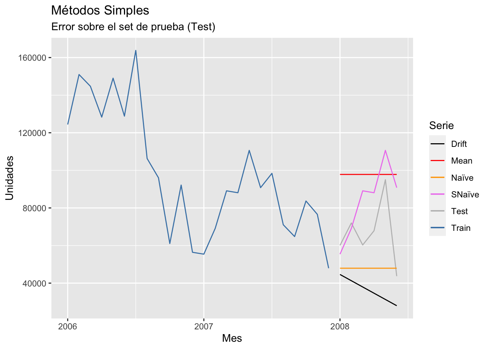
El método Naïve Estacional se acerca bastante a los datos reales (Test), esto es porque la serie tiene cierta estacionalidad, es decir, se repiten alguno patrones, pero también vimos que las ventas en forma general han disminuido con el tiempo por lo que no captura la caída de los próximos meses. El método del promedio sobrestima la demanda, en este caso puede que sea mejor utilizar el promedio del último año para descartar los valores altos del 2006. El método Naïve la subestima, solo captura la caída final. Por último el método Drift replica la tendencia a la baja y es que al tomar el primer y último valor para extrapolar una recta no es una buena idea en este caso, nuevamente por los altos valores del 2006.
| Periodo | Ventas | Mean | Error.Mean | Naïve | Error.Naïve | SNaïve | Error.SNaïve | Drift | Error.Drift |
|---|---|---|---|---|---|---|---|---|---|
| 2008-01 | 60108 | 97820 | -37712 | 47936 | 12172 | 55415 | 4693 | 44612 | 15496 |
| 2008-02 | 72000 | 97820 | -25820 | 47936 | 24064 | 69103 | 2897 | 41288 | 30712 |
| 2008-03 | 60296 | 97820 | -37524 | 47936 | 12360 | 89111 | -28815 | 37964 | 22332 |
| 2008-04 | 67868 | 97820 | -29952 | 47936 | 19932 | 88087 | -20219 | 34640 | 33228 |
| 2008-05 | 95008 | 97820 | -2812 | 47936 | 47072 | 110628 | -15620 | 31316 | 63692 |
| 2008-06 | 43701 | 97820 | -54119 | 47936 | -4235 | 90796 | -47095 | 27992 | 15709 |
| MÉTODO | MAE | MAPE |
|---|---|---|
| Promedio | 31323 | 55.3 |
| Naïve | 19972 | 27.1 |
| SNaïve | 19890 | 35.6 |
| Drift | 30195 | 42.9 |
Tanto el modelo Naïve como el Naïve Estacional tienen un MAE similar, pero el segundo tiene mayor porcentaje de error (35.6%), esto es causado principalmente por la caída abrupta del último periodo.
El primer método de suavización que utilizaremos es el de Suavización Exponencial Simple (SES), muy utilizado para los casos en donde no se ven patrones claros de tendencia. Este método toma como pronóstico el pronóstico del periodo anterior más/menos una corrección, para esto se vale de un parámetro \(\alpha\) que determina el grado hasta el cual las observaciones más recientes pueden o no influir en el valor del pronóstico. El coeficiente \(\alpha\) puede tomar valores entre cero y uno, normalmente se aconseja utilizar un valor alto para series suaves y un valor bajo para series muy aleatorias. Sin embargo la forma más confiable de seleccionar un buen parámetro es estimándolo de las observaciones pasadas optimizando la suma de los cuadrados de los errores (SSE: Sum of Squared Errors) dado por la siguiente fórmula:
\[SSE = \sum_{t=1}^{N} (Real_{t} - Pronóstico_{t})^2\]
Las funciones que aplicaremos nos darán automáticamente los parámetros y valores iniciales que minimizan el SSE y que se ajustan a las restricciones de los coeficientes, para este modelo se restringe \(0\leq\alpha\leq1\).
# Ajuste del modelo SES
ses_fc <- ses(ts_train, h = 6, lambda = 0)
ses_fc[["model"]]
## Simple exponential smoothing
##
## Call:
## ses(y = ts_train, h = 6, lambda = 0)
##
## Box-Cox transformation: lambda= 0
##
## Smoothing parameters:
## alpha = 0.6854
##
## Initial states:
## l = 11.7851
##
## sigma: 0.2556
##
## AIC AICc BIC
## 14.70329 15.90329 18.23745# Gráfico del modelo SES ajustado
autoplot(ts_train, series = 'Train') +
autolayer(fitted(ses_fc), series = 'Ajuste') +
guides(color = guide_legend('Serie')) +
labs(title = 'Suavización Exponencial Simple',
subtitle = 'Ajuste del Modelo (Train)',
x = 'Meses',
y = 'Unidades') +
scale_color_manual(values = c('red',
'steelblue'))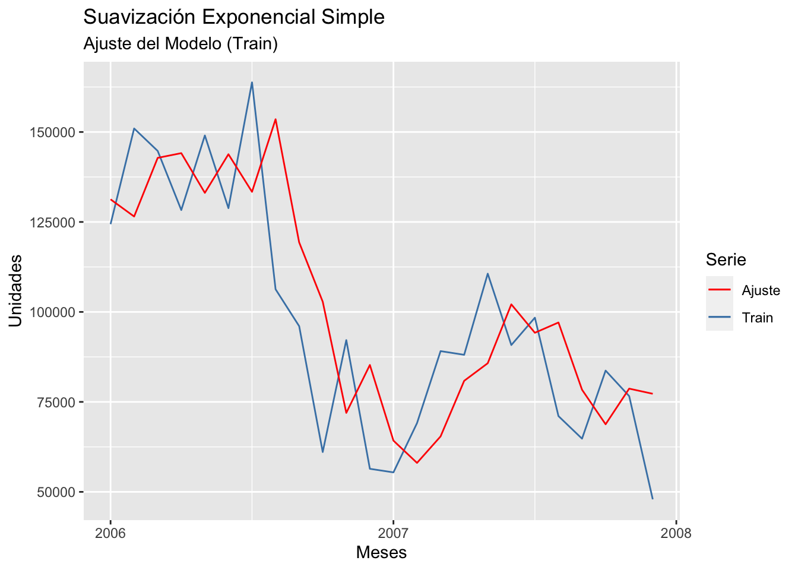
# # Gráfico de errores de pronostico SES
autoplot(ts_train, series = 'Train') +
autolayer(ses_fc$mean, series = 'Pronóstico') +
autolayer(fitted(ses_fc), series = 'Ajuste') +
autolayer(ts_test, series = 'Test') +
guides(color = guide_legend('Serie')) +
labs(title = 'Suavización Exponencial Simple',
subtitle = 'Pronóstico sobre el set de prueba (Test)',
x = 'Meses',
y = 'Unidades') +
scale_color_manual(values = c('red',
'orange',
'grey',
'steelblue'))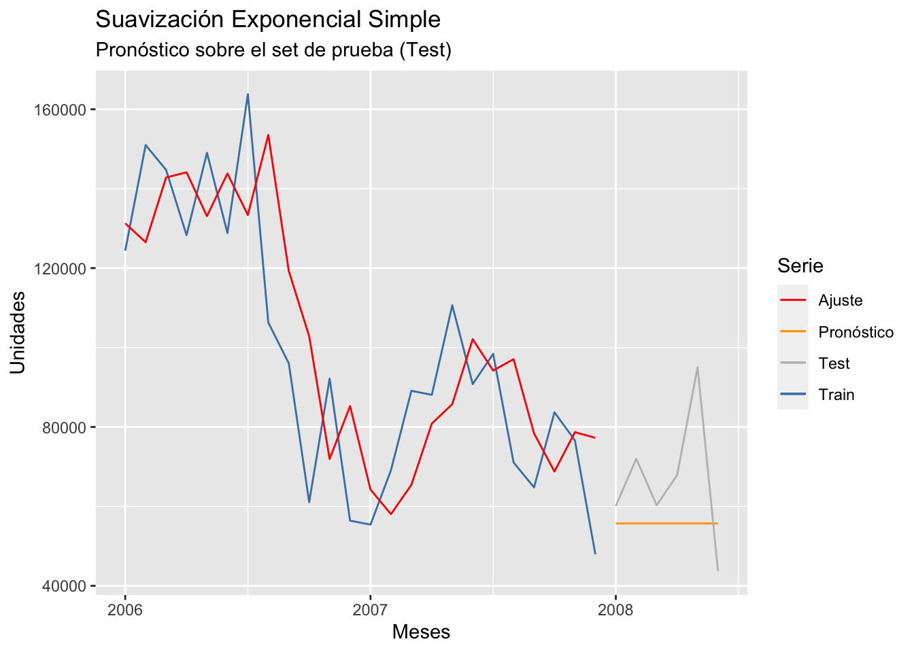
Un \(\alpha\) de 0.68 permite una reacción rápida a los cambios pero no suaviza demasiado la aleatoriedad. De todas maneras vemos buenos resultados sobre los datos de prueba.
| Periodo | Ventas | Pronóstico | Error |
|---|---|---|---|
| 2008-01 | 60108 | 55703 | 4405 |
| 2008-02 | 72000 | 55703 | 16297 |
| 2008-03 | 60296 | 55703 | 4593 |
| 2008-04 | 67868 | 55703 | 12165 |
| 2008-05 | 95008 | 55703 | 39305 |
| 2008-06 | 43701 | 55703 | -12002 |
| MÉTODO | MAE | MAPE |
|---|---|---|
| SES | 14795 | 20.7 |
Con un 20.7% de error porcentual promedio, el modelo SES es el que mejor resultado nos ofrece hasta el momento.
Para los casos en donde si existe tendencia es posible utilizar el método de Holt o Suavización Exponencial de dos Parámetros. Este modelo es similar al SES pero utiliza dos factores, uno para suavizar la aleatoriedad y otro para corregir la tendencia, una buena combinación de estos es la clave de un buen modelo.
El modelo de Holt genera un pronóstico de tendencia constante creciente o decreciente en forma indefinida en el tiempo produciendo grandes errores para pronósticos a mediano y largo plazo. Si bien no es nuestro caso, vamos a utilizar un tercer parámetro que permite aplanar la pendiente a medida que transcurren los periodos. En resumen, tenemos los siguientes coeficientes de ajuste:
\(\alpha\): coeficiente de atenuación de los datos. Valores cercanos a 1 indican que reacciona rápido a los cambios.
\(\beta\): coeficiente de atenuación de la tendencia, valores cercanos a 0 replicará completamente la tendencia a los nuevos datos.
\(\phi\): coeficiente que aplana la tendencia en pronósticos a largo plazo. Valores cercanos a 0 la atenuará en forma más repentina.
La función holt() del paquete forecast encuentra la mejor combinación de los coeficientes minimizando el SSE.
# Ajuste del modelo Holt
holt_fc <- holt(ts_train,
damped = TRUE,
h = 6,
lambda = 0)
holt_fc[["model"]]
## Damped Holt's method
##
## Call:
## holt(y = ts_train, h = 6, damped = TRUE, lambda = 0)
##
## Box-Cox transformation: lambda= 0
##
## Smoothing parameters:
## alpha = 0.6141
## beta = 1e-04
## phi = 0.98
##
## Initial states:
## l = 11.8676
## b = -0.049
##
## sigma: 0.2683
##
## AIC AICc BIC
## 19.51379 24.45497 26.58212# Gráfico del modelo Holt ajustado
autoplot(ts_train, series = 'Train') +
autolayer(fitted(holt_fc), series = 'Ajuste') +
labs(title = 'Método de Holt',
subtitle = 'Ajuste del Modelo (Train)',
x = 'Meses',
y = 'Unidades') +
guides(color = guide_legend('Serie')) +
scale_color_manual(values = c('red',
'steelblue'))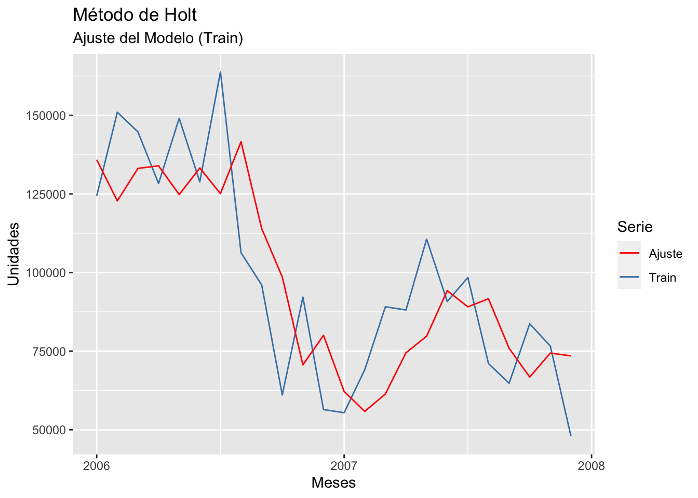
# Gráfico de errores de pronostico Holt
autoplot(ts_train, series = 'Train') +
autolayer(holt_fc$mean, series = 'Pronóstico') +
autolayer(ts_test, series = "Real") +
labs(title = 'Método de Holt',
subtitle = 'Pronóstico sobre el set de prueba (Test)',
x = 'Meses',
y = 'Unidades') +
guides(color = guide_legend('Serie')) +
scale_color_manual(values = c(
'orange',
'grey',
'steelblue'))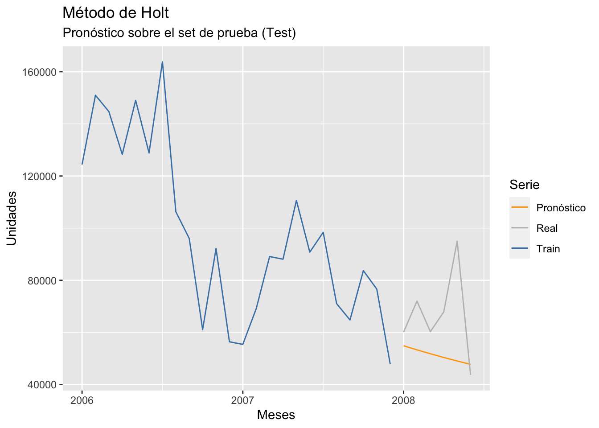
Los resultados observados se asemejan al modelo SES, con la diferencia que el Holt le incorpora cierta tendencia al pronosticos.
| Periodo | Ventas | Pronóstico | Error |
|---|---|---|---|
| 2008-01 | 60108 | 54881 | 5227 |
| 2008-02 | 72000 | 53313 | 18687 |
| 2008-03 | 60296 | 51820 | 8476 |
| 2008-04 | 67868 | 50397 | 17471 |
| 2008-05 | 95008 | 49041 | 45967 |
| 2008-06 | 43701 | 47747 | -4046 |
resumen_holt %>% kbl(align = 'c') %>%
kable_styling(bootstrap_options = 'striped',
full_width = F,
position = 'center') %>%
add_header_above(c("Error de Pronósticos" = 3)) %>%
column_spec(1:3, width = "3cm")| MÉTODO | MAE | MAPE |
|---|---|---|
| Holt | 16646 | 22 |
Con un error porcentual de 22% es apenas un par de puntos mejor que el modelo Naïve.
El modelo de Holt-Winters extiende el modelo de dos parámetros de Holt para incorporar un tercer parámetro que modela la estacionalidad de la serie. Hay dos variaciones de este método y su aplicación depende de como cambie la estacionalidad en el tiempo, se prefiere un modelo aditivo si es constante y un multiplicativo si cambia proporcionalmente con el nivel de la serie. Vamos a aplicar ambas variantes a nuestros datos y a comparar los resultados.
# Ajuste del modelo Holt-Winters Aditivo
winA_fc <- hw(ts_train,
seasonal = 'additive',
h = 6)
winA_fc[['model']]
## Holt-Winters' additive method
##
## Call:
## hw(y = ts_train, h = 6, seasonal = "additive")
##
## Smoothing parameters:
## alpha = 0.5154
## beta = 1e-04
## gamma = 1e-04
##
## Initial states:
## l = 136441.2172
## b = -2968.0323
## s = -42954.41 -10285.61 -30952.43 -12578.84 -5426.385 48976.92
## 10933.15 28037.7 4227.078 17557.44 20714.68 -28249.3
##
## sigma: 27751.93
##
## AIC AICc BIC
## 574.9975 676.9975 595.0244# Ajuste del modelo Holt-Winters Multiplicativo
winM_fc <- hw(ts_train,
seasonal = 'multiplicative',
h = 6)
winM_fc[['model']]
## Holt-Winters' multiplicative method
##
## Call:
## hw(y = ts_train, h = 6, seasonal = "multiplicative")
##
## Smoothing parameters:
## alpha = 0.2914
## beta = 0.0045
## gamma = 0.0029
##
## Initial states:
## l = 136441.8407
## b = -3090.0416
## s = 0.6003 0.9964 0.7372 0.9046 0.9352 1.3815
## 1.0651 1.2778 1.0681 1.126 1.1005 0.8073
##
## sigma: 0.3262
##
## AIC AICc BIC
## 577.7923 679.7923 597.8192# Gráficos de ajuste de los modelos Holt-Winters
autoplot(ts_train, series = 'Train') +
autolayer(fitted(winA_fc), series = 'Ajuste HWA') +
autolayer(fitted(winM_fc), series = 'Ajuste HWM') +
labs(title = 'Métodos de Holt-Winters',
subtitle = 'Ajuste del Modelo (Train)',
x = 'Meses',
y = 'Unidades') +
guides(color = guide_legend('Serie')) +
scale_color_manual(values = c('red',
'orange',
'steelblue'))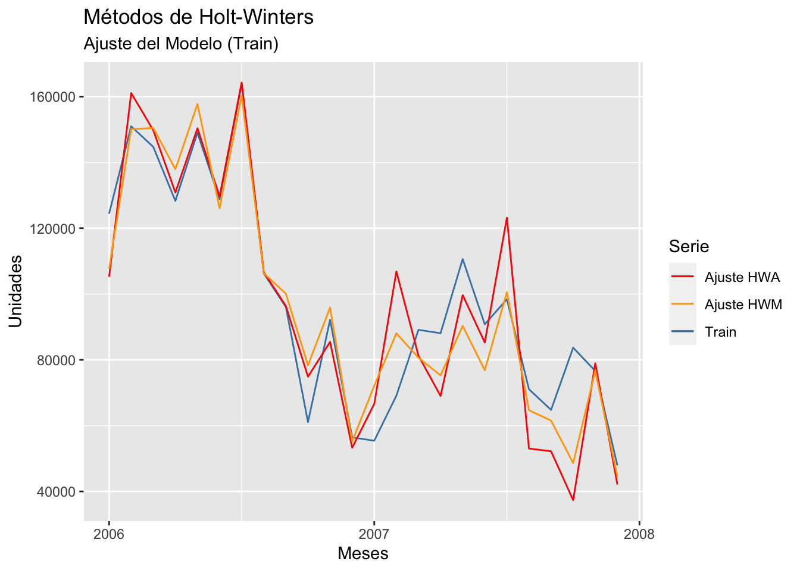
# Gráfico de errores de pronosticos Holt-Winters
autoplot(ts_train, series = 'Train') +
autolayer(winA_fc$mean, series = 'Pronóstico HWA') +
autolayer(winM_fc$mean, series = 'Pronóstico HWM') +
autolayer(ts_test, series = 'Test') +
labs(title = 'Métodos de Holt-Winters',
subtitle = 'Pronóstico sobre el set de prueba (Test)',
x = 'Meses',
y = 'Unidades') +
guides(color = guide_legend('Serie')) +
scale_color_manual(values = c('red',
'orange',
'grey',
'steelblue'))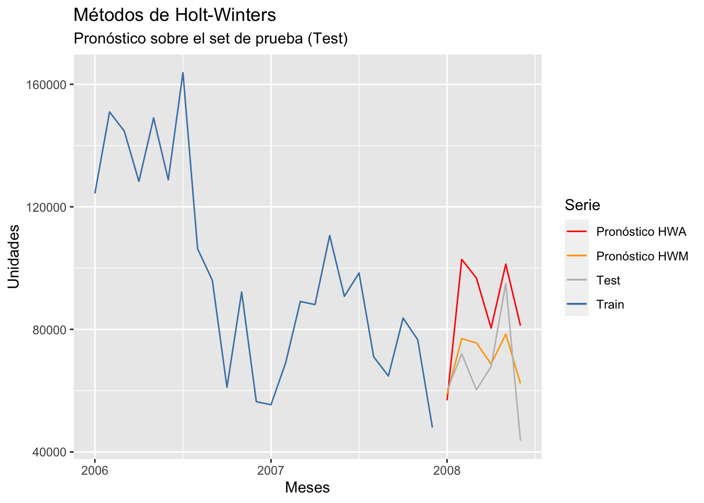
| Periodo | Ventas | Pronóstico.A. | Error.A. | Pronóstico.M. | Error.M. |
|---|---|---|---|---|---|
| 2008-01 | 60108 | 56854 | 3254 | 58809 | 1299 |
| 2008-02 | 72000 | 102848 | -30848 | 76981 | -4981 |
| 2008-03 | 60296 | 96733 | -36437 | 75594 | -15298 |
| 2008-04 | 67868 | 80440 | -12572 | 68653 | -785 |
| 2008-05 | 95008 | 101286 | -6278 | 78477 | 16531 |
| 2008-06 | 43701 | 81218 | -37517 | 62364 | -18663 |
| MÉTODO | MAE | MAPE |
|---|---|---|
| HWA | 21151 | 36.6 |
| HWM | 9593 | 16.0 |
El método del Holt-Winters Multiplicativo arrojó un 16% de promedio de error por período, por el momento es el mejor modelo obtenido.
Arima es otro modelo ampliamente utilizado para el pronóstico de series temporales. Es un método que combina modelos de diferenciación, autorregresión y medias móviles y que, a diferencia de los modelos de suavización, se basa en el análisis de la autocorrelación de los datos de la serie pero requiere como condición que esta sea estacionaria, si esto no se cumple no se puede aplicar el modelo.
Una serie estacionaria es aquella cuyas propiedades no dependen del tiempo en que observada. Es decir, series con tendencia o estacionalidad son series no estacionarias ya que estas afectan al valor de la observación en periodos diferentes. Algunos casos pueden ser confusos, pero en general una serie estacionaria es aquella que no tiene patrones que se puedan predecir en el tiempo.
Transformaciones logarítmicas, diferencias de primer y segundo orden y diferencias de orden estacional son herramientas que nos permitirán llevar una serie con patrones de tendencia y estacionalidad a una serie estacionaria.
Para una serie sin estacionalidad (como la vamos a considerar en este modelo) es necesario encontrar solo 3 parámetros para ajustar el modelo ARIMA:
Para poder encontrar estos parámetros nos debemos ayudar del análisis de los gráficos de autocorrelación y de autocorrelaciones parcial de la serie.
La serie que estamos analizando presenta tendencias positivas y negativas lo que indicaría que no es estacionaria. Formalmente podemos utilizar el test de Dickey-Fuller para corroborar si una serie es o no estacionaria. Las hipótesis de este test son las siguientes:
\(H_{0}\) : La serie no es estacionaria.
\(H_{1}\) : La serie es estacionaria.
Rechazamos \(H_{0}\) si el p-value < 0.05 con un 95% de confianza.
Apliquemos el test a nuestra serie:
adf.test(ts_train, alternative = 'stationary')
##
## Augmented Dickey-Fuller Test
##
## data: ts_train
## Dickey-Fuller = -2.0603, Lag order = 2, p-value = 0.5494
## alternative hypothesis: stationaryEl test de Dickey-Fuller indica que no podemos rechazar la hipótesis nula (p-value > 0.05) lo que indica que la serie es no estacionaria.
Una artilugio para eliminar la tendencia es realizar la diferencia de primer orden, veamos si esto funciona.
cbind("Serie original" = ts_train,
'1er diferencia' = diff(ts_train)) %>%
autoplot(facets = TRUE,
color = 'steelblue') +
labs(title = 'Ventas',
x = 'Meses')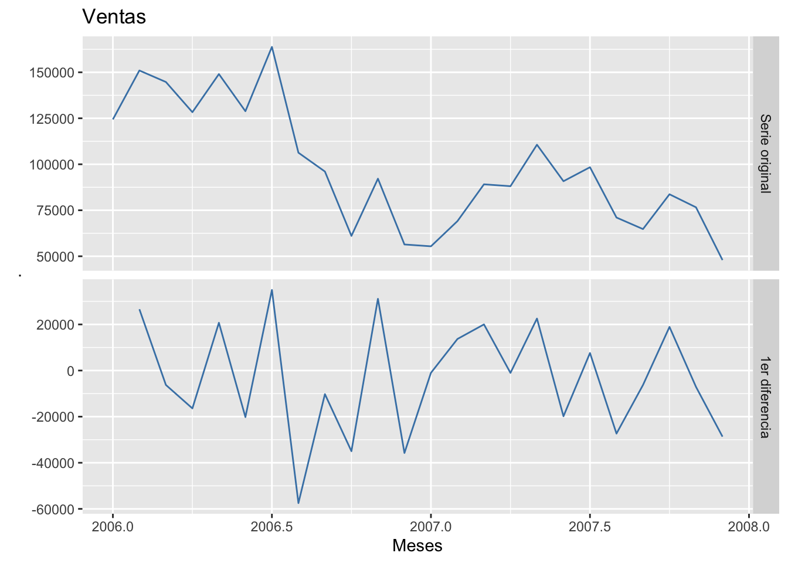
La serie de primeras diferencias ya parece estacionaria, se ha perdido la tendencia y además vemos como las observaciones se ubican alrededor de una media de cero con una varianza que no cambia en el tiempo. Confirmemos con un nuevo test de Dickey-Fuller.
ts_train %>%
diff() %>%
adf.test(alternative = 'stationary')
##
## Augmented Dickey-Fuller Test
##
## data: .
## Dickey-Fuller = -2.6198, Lag order = 2, p-value = 0.3363
## alternative hypothesis: stationaryCon un p-value de 0.33 aún no podemos rechazar la hipótesis nula por lo que la serie no es estacionaria.
Vamos a intentar aplicando diferencias de orden 2. Es decir, la diferencia de la serie de 1eras diferencias.
cbind("Original" = ts_train,
"1er. dif." = diff(ts_train),
'2da. dif.' = diff(diff(ts_train))) %>%
autoplot(facets = TRUE,
color = 'steelblue') +
labs(title = 'Ventas',
x = 'Meses')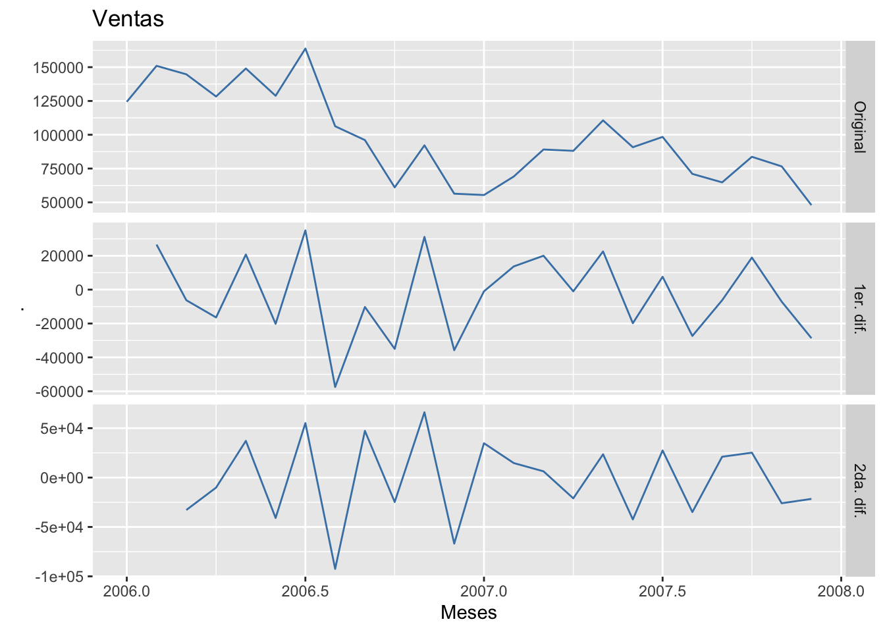
ts_train %>%
diff(difference = 2) %>%
adf.test(alternative = 'stationary')
##
## Augmented Dickey-Fuller Test
##
## data: .
## Dickey-Fuller = -4.0105, Lag order = 2, p-value = 0.02289
## alternative hypothesis: stationaryCon un p-value de 0.022 (< 0.05), el test determina que se rechaza la hipótesis nula a favor de la alternativa: la serie ya es estacionaria.
Al haber realizado dos diferencias el parámetro \(d\) del modelo ARIMA toma el valor 2.
El próximo paso es realizar los gráficos de autocorrelación (ACF) y autocorrelación parcial (PACF) de la serie estacionaria para poder determinar los coeficientes \(p\) y \(q\) del modelo.
Hemos dicho anteriormente que el gráfico ACF mide la relación lineal entre una valor \(y_{t}\) e \(y_{t-k}\) para diferentes valores de \(k\). Así, si \(y_{t}\) e \(y_{t-1}\) están correlacionados entonces \(y_{t-1}\) e \(y_{t-2}\) también deben estarlo, y como consecuencia hay correlación entre \(y_{t}\) e \(y_{t-2}\) porque ambos están conectados con \(y_{t-1}\). Al usar el PACF se salta este problema ya que este mide la relación entre \(y_{t}\) e \(y_{t-k}\) después de remover los efectos de los retardos \(1, 2, 3, ..., k-1\).
ts_train %>%
diff(differences = 2) %>%
ggtsdisplay(lag = 30)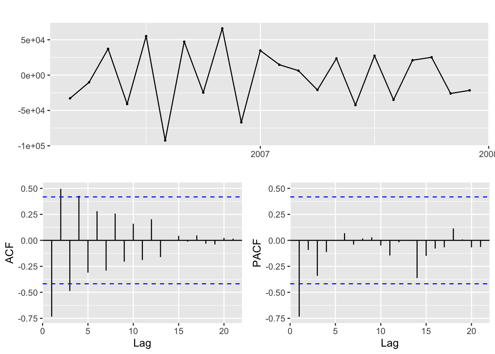
Como regla general si los coeficientes de ACF tienden exponencialmente a cero el modelo adecuado será un ARIMA(p,d,0). Luego, el número \(p\) del modelo son los coeficientes significativamente distintos de cero del gráfico PACF. Como tenemos un solo pico significativo en PACF tenemos \(p = 1\), resultando un modelo ARIMA(1,2,0).
# Modelo ARIMA(1,2,0)
arima120.train <- Arima(ts_train,
order = c(1,2,0),
lambda = 0)La función auto.arima() del paquete forecast nos permite encontrar la mejor combinación de parámetros para un modelo ARIMA, incluso podemos verificar si nuestros modelos propuestos son correctos o si deberíamos considerar otros.
auto.arima(ts_train,
seasonal = FALSE,
stepwise = TRUE,
approximation = FALSE)
## Series: ts_train
## ARIMA(1,1,0)
##
## Coefficients:
## ar1
## -0.4150
## s.e. 0.1954
##
## sigma^2 estimated as 511455320: log likelihood=-262.83
## AIC=529.65 AICc=530.25 BIC=531.92La función nos sugiere que el mejor modelo será un ARIMA(1,1,0), es decir con \(d=1\) lo que significa que solo necesita una diferencia de primer orden para que la serie sea estacionaria, esto es contradictorio para nosotros ya que hemos necesitado dos diferencias utilizando el test de Dickey-Fuller. De todas maneras vamos a incorporarlo como modelo de análisis.
# Modelo ARIMA(1,1,0)
arima110.train <- Arima(ts_train,
order = c(1,1,0),
lambda = 0)
arima110.train
## Series: ts_train
## ARIMA(1,1,0)
## Box Cox transformation: lambda= 0
##
## Coefficients:
## ar1
## -0.348
## s.e. 0.208
##
## sigma^2 estimated as 0.06405: log likelihood=-0.59
## AIC=5.17 AICc=5.77 BIC=7.44autoplot(ts_train, series = 'Train') +
autolayer(fitted(arima120.train), series = 'Ajuste ARIMA(1,2,0)') +
autolayer(fitted(arima110.train), series = 'Ajuste ARIMA(1,1,0)') +
labs(title = 'Métodos ARIMA',
subtitle = 'Ajuste de Modelos (Train)',
x = 'Meses',
y = 'Unidades') +
guides(color = guide_legend('Serie')) +
scale_color_manual(values = c('red',
'orange',
'steelblue'))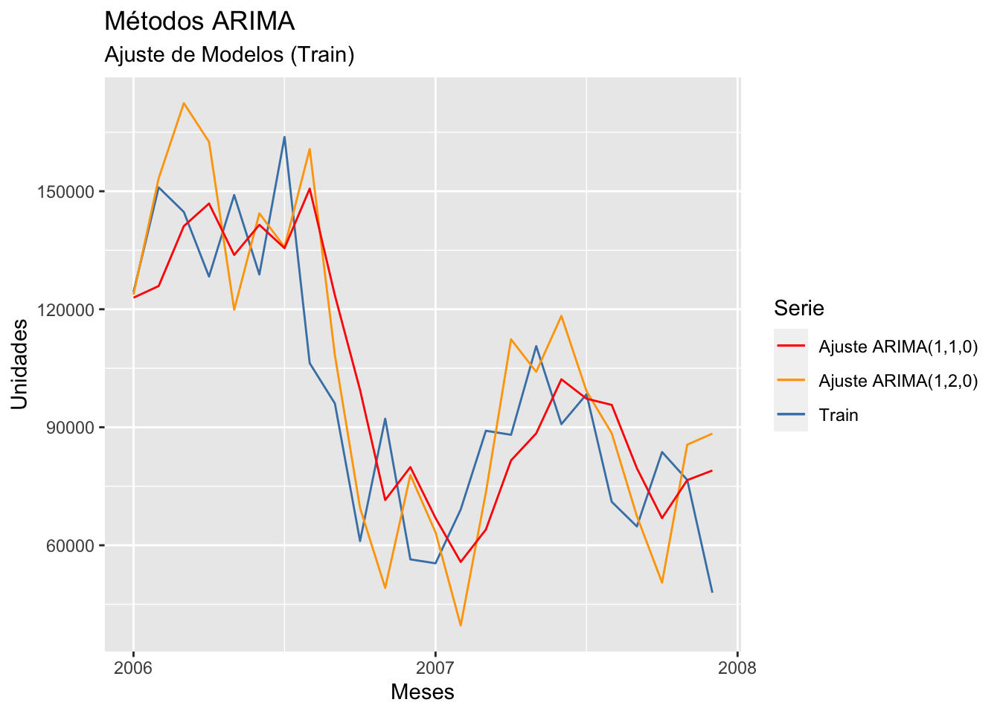
Para la mayoría de los modelos de pronósticos, el residuo es la diferencia entre las observaciones \(y_{t}\) y sus correspondientes pronósticos ajustados \(\hat{y}_{t}\) resultando:
\[e_{t} = y_{t} - \hat{y}_{t}\]
Analizar los residuos nos permite conocer si el modelo de pronóstico ha capturado correctamente la información subyacente en los datos. Los residuos deben responder a un ruido blanco, es decir deben tener una media en cero y no estar correlacionados. Idealmente también deberían tener varianza constante y estar normalmente distribuidos aunque estos dos últimos requisitos no son estrictamente necesarios.
Este análisis lo vamos a hacer gráficamente y nos apoyaremos en el test de Ljung-Box el cual nos servirá para confirmar si nuestro modelo está bien ajustado y si los errores se corresponden a un ruido blanco. Las hipótesis nula y alternativa en este test son las siguientes:
\(H_{0}\) : Los errores se distribuyen en forma independiente (hay ruido blanco).
\(H_{1}\) : Los errores no se distribuyen en forma independiente (No hay ruido blanco).
Rechazamos \(H_{0}\) si el p-value < 0.05 con un 95% de confianza.
La función checkresiduals() del paquete forecast nos permite verificar si los residuos cumplen o no las condiciones que describimos.
checkresiduals(arima120.train)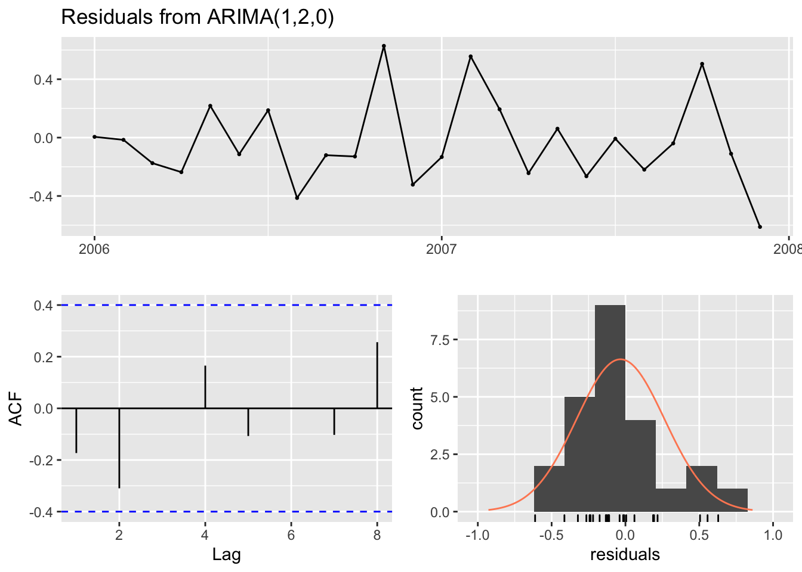
##
## Ljung-Box test
##
## data: Residuals from ARIMA(1,2,0)
## Q* = 4.7659, df = 4, p-value = 0.3122
##
## Model df: 1. Total lags used: 5El análisis de la serie de residuos nos dice que no existe un patrón de tendencia que sugiere autocorrelación de los errores, esto también es visible en el gráfico ACF donde no vemos coeficientes significativamente distintos de cero. También vemos que los errores están centrados en cero y que se distribuyen relativamente normal. Confirmamos estos supuestos con el test de Ljung-Box que arroja un p-value > 0.05 lo que significa que no se rechaza la hipótesis nula de que los errores se distribuyen de forma independiente.
checkresiduals(arima110.train)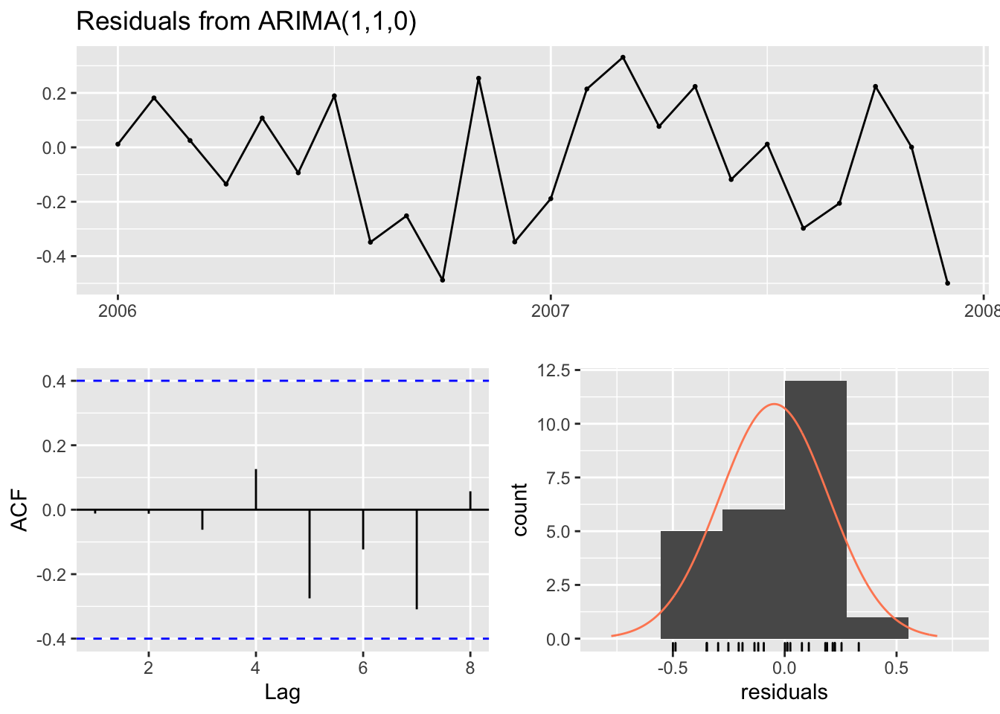
##
## Ljung-Box test
##
## data: Residuals from ARIMA(1,1,0)
## Q* = 3.1028, df = 4, p-value = 0.5408
##
## Model df: 1. Total lags used: 5Con un p-value > 0.05 no podemos rechazar la hipótesis nula, por lo tanto los errores para este modelo también se distribuyen de manera independiente.
arima120.train_fc <- forecast(arima120.train, h = 6)
arima110.train_fc <- forecast(arima110.train, h = 6)# Gráfico de errores de pronosticos ARIMA
autoplot(ts_train, series = 'Train') +
autolayer(arima120.train_fc$mean, series = 'ARIMA(1,2,0)') +
autolayer(arima110.train_fc$mean, series = 'ARIMA(1,1,0)') +
autolayer(ts_test, series = 'Test') +
labs(title = 'Métodos ARIMA',
subtitle = 'Pronóstico sobre el set de prueba (Test)',
x = 'Meses',
y = 'Unidades') +
guides(color = guide_legend('Serie')) +
scale_color_manual(values = c('red',
'orange',
'grey',
'steelblue'))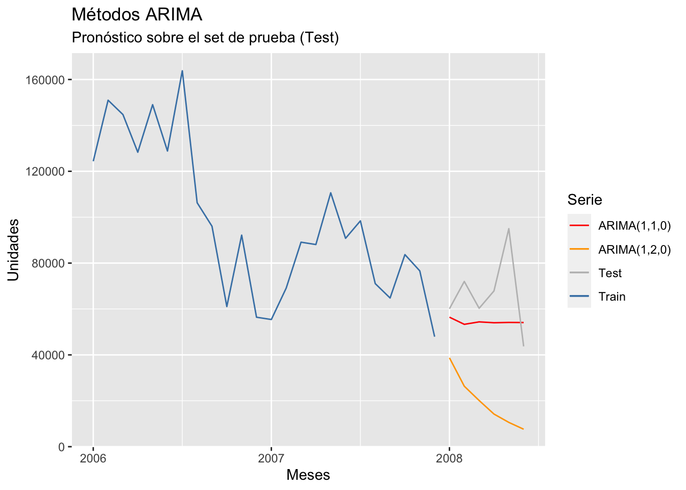
| Periodo | Ventas | Pronóstico | Error |
|---|---|---|---|
| 2008-01 | 60108 | 38723 | 21385 |
| 2008-02 | 72000 | 26350 | 45650 |
| 2008-03 | 60296 | 20119 | 40177 |
| 2008-04 | 67868 | 14218 | 53650 |
| 2008-05 | 95008 | 10584 | 84424 |
| 2008-06 | 43701 | 7609 | 36092 |
| Periodo | Ventas | Pronóstico | Error |
|---|---|---|---|
| 2008-01 | 60108 | 56432 | 3676 |
| 2008-02 | 72000 | 53317 | 18683 |
| 2008-03 | 60296 | 54381 | 5915 |
| 2008-04 | 67868 | 54009 | 13859 |
| 2008-05 | 95008 | 54138 | 40870 |
| 2008-06 | 43701 | 54093 | -10392 |
| MÉTODO | MAE | MAPE |
|---|---|---|
| ARIMA(1,2,0) | 46896 | 69.4 |
| ARIMA(1,1,0) | 15566 | 21.5 |
Según la metodología de Simulación de Modelos, luego de ajustar diferentes métodos sobre nuestro grupo Train y evaluar pronósticos sobre el grupo Test debemos considerar como mejor modelo aquél que obtenga el menor error según la métrica adoptada y utilizarlo para el pronóstico de periodos futuros.
El resumen de los errores MAE y MAPE que arrojó cada modelo es el siguiente:
|
Error de Pronósticos
|
||
|---|---|---|
| MÉTODO | MAE | MAPE |
| HWM | 9593 | 16.0 |
| SES | 14795 | 20.7 |
| ARIMA(1,1,0) | 15566 | 21.5 |
| Holt | 16646 | 22.0 |
| Naïve | 19972 | 27.1 |
| SNaïve | 19890 | 35.6 |
| HWA | 21151 | 36.6 |
| Drift | 30195 | 42.9 |
| Promedio | 31323 | 55.3 |
| ARIMA(1,2,0) | 46896 | 69.4 |
Siendo el modelo de Holt-Winters Multiplicativo el que obtuvo los mejores resultados, vamos a realizar el pronóstico de periodos futuros pero utilizando ambos grupos como datos de entradas (Train y Test).
El número obtenido para cada periodo consistirá en una estimación probabilística de un valor futuro, que será una media y dos intervalos de confianza, uno al 80% y otro al 95%.
# Ajuste y Pronóstico HW - Multiplicativo
winM_pred <- hw(ts_ventas,
seasonal = 'multiplicative',
h = 6)
winM_pred[['model']]
## Holt-Winters' multiplicative method
##
## Call:
## hw(y = ts_ventas, h = 6, seasonal = "multiplicative")
##
## Smoothing parameters:
## alpha = 0.2341
## beta = 1e-04
## gamma = 1e-04
##
## Initial states:
## l = 133700.773
## b = -2809.4672
## s = 0.6596 0.969 0.7678 0.8709 0.9422 1.4004
## 1.0793 1.3124 1.0259 1.0694 1.0652 0.8379
##
## sigma: 0.2546
##
## AIC AICc BIC
## 712.6229 763.6229 736.4433
autoplot(ts_ventas, series = 'Real') +
autolayer(winM_pred, series = 'Pronóstico') +
labs(title = 'Método de Holt-Winters Multiplicativo',
subtitle = 'Pronóstico a 6 meses',
x = 'Meses',
y = 'Unidades') +
guides(color = guide_legend('Serie')) +
scale_color_manual(values = c('orange',
'steelblue'))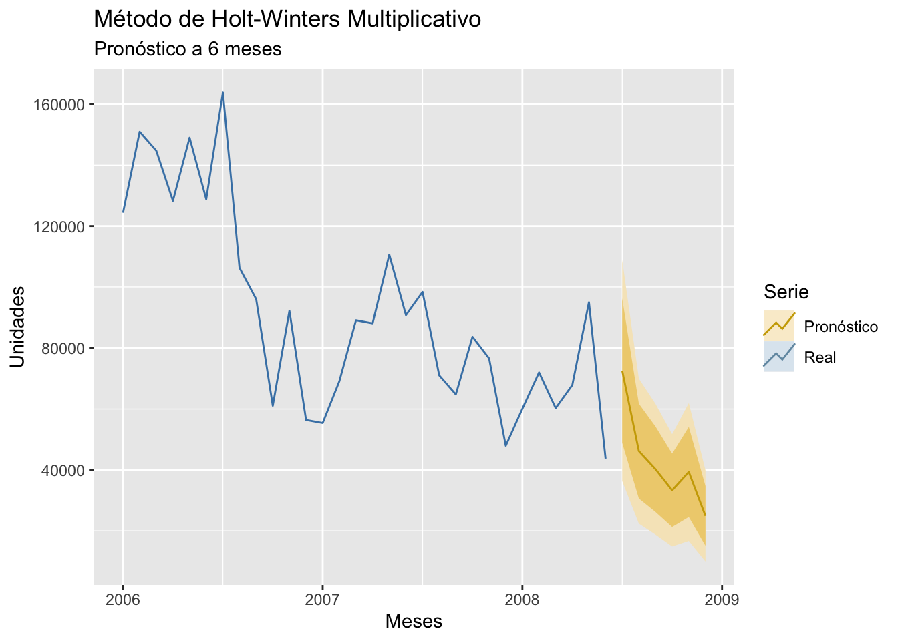
El modelo utiliza un \(beta = 0,0001\) lo que significa que no suaviza la pendiente sino que la replica a los pronósticos de los periodos futuros.
| Periodo | Point.Forecast | Lo.80 | Hi.80 | Lo.95 | Hi.95 |
|---|---|---|---|---|---|
| Jul 2008 | 72571 | 48890 | 96253 | 36354 | 108789 |
| Aug 2008 | 46185 | 30630 | 61740 | 22396 | 69974 |
| Sep 2008 | 40243 | 26226 | 54261 | 18805 | 61682 |
| Oct 2008 | 33324 | 21289 | 45359 | 14918 | 51730 |
| Nov 2008 | 39338 | 24562 | 54114 | 16740 | 61936 |
| Dec 2008 | 24924 | 15150 | 34697 | 9976 | 39871 |
Una técnica interesante dentro de la simulación de modelos es la de utilizar multimodelos de pronósticos, es decir, se eligen los dos o tres mejores y se toma como pronóstico final el promedio de los pronósticos de cada uno de ellos. Siguiendo esta línea, vamos a realizar pronósticos con nuestro segundo mejor modelo (SES) y luego promediarlos con el obtenido por el Holt-Winters Multiplicativo.
# Ajuste y Pronóstico SES
ses_pred <- ses(ts_ventas, h = 6, lambda = 0)
ses_pred[['model']]
## Simple exponential smoothing
##
## Call:
## ses(y = ts_ventas, h = 6, lambda = 0)
##
## Box-Cox transformation: lambda= 0
##
## Smoothing parameters:
## alpha = 0.5349
##
## Initial states:
## l = 11.8036
##
## sigma: 0.269
##
## AIC AICc BIC
## 27.19243 28.11551 31.39602
autoplot(ts_ventas, series = 'Real') +
autolayer(ses_pred, series = 'Pronóstico') +
labs(title = 'Método de Holt-Winters Multiplicativo',
subtitle = 'Pronóstico a 6 meses',
x = 'Meses',
y = 'Unidades') +
guides(color = guide_legend('Serie')) +
scale_color_manual(values = c('orange',
'steelblue'))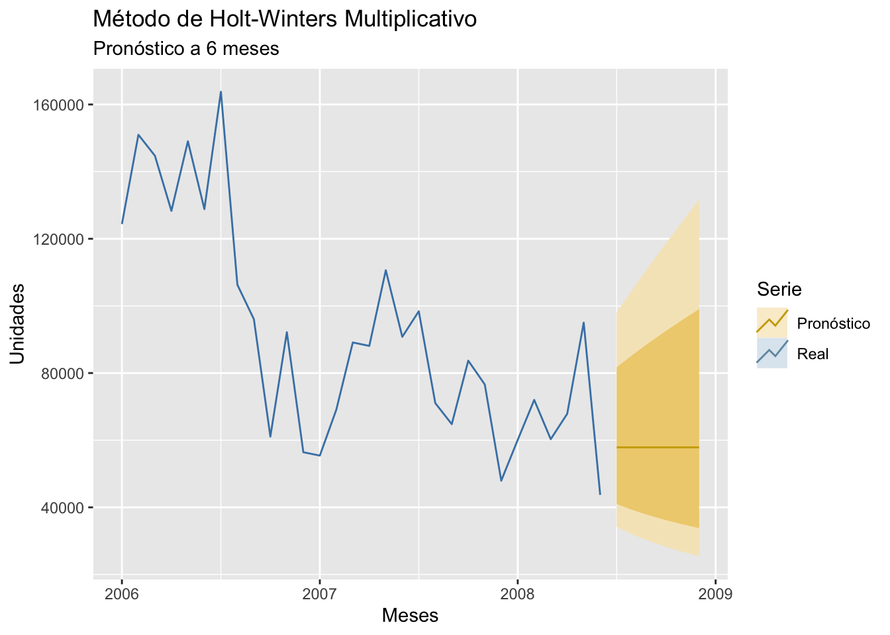
| Periodo | Point.Forecast | Lo.80 | Hi.80 | Lo.95 | Hi.95 |
|---|---|---|---|---|---|
| Jul 2008 | 57872 | 40995 | 81697 | 34156 | 98056 |
| Aug 2008 | 57872 | 39143 | 85562 | 31824 | 105239 |
| Sep 2008 | 57872 | 37559 | 89171 | 29876 | 112102 |
| Oct 2008 | 57872 | 36170 | 92596 | 28203 | 118754 |
| Nov 2008 | 57872 | 34930 | 95883 | 26737 | 125262 |
| Dec 2008 | 57872 | 33808 | 99063 | 25436 | 131671 |
La tabla de pronósticos finales para el segundo semestre del año 2008 es la siguiente:
|
Pronóstico Multimodelo 2do. Semestre 2008
|
|||
|---|---|---|---|
| Periodo | Pronóstico HWM | Pronóstico SES | Pronóstico Promedio |
| Jul 2008 | 72571 | 57872 | 65222 |
| Aug 2008 | 46185 | 57872 | 52028 |
| Sep 2008 | 40243 | 57872 | 49058 |
| Oct 2008 | 33324 | 57872 | 45598 |
| Nov 2008 | 39338 | 57872 | 48605 |
| Dec 2008 | 24924 | 57872 | 41398 |
Uno de mis profesores durante mis años de universidad decía que los pronósticos siempre van a estar equivocados, que quizás había algunos modelos que podían resultar útiles pero que al final por más ajuste que se haga no van a predecir el futuro es forma correcta. Decía que la clave para tener un buen método de pronóstico se basa principalmente en la comparación entre ellos y quedarse con el que nos de un menor error. A esto es lo que apuntaba este proyecto, a tratar de entender que la importancia de realizar pronósticos, más allá de los los errores que puedan tener y de que no salgan como lo planeamos, es que nos ayudan a conocer mejor tanto el contexto como a nuestro propio negocio, a ver nuestras limitaciones y a hacernos preguntas para tratar de estar preparados a diferentes escenarios.
Pudimos ver con este ejercicio como un modelo, que tiene un error de 16% (probablemente inaceptable en muchos contextos) puede superar ampliamente los métodos simples como el de promedios o el naïve y que son preferibles a no realizar pronóstico alguno porque nos pueden ser de gran utilidad a la hora de reducir los riesgos en la toma de decisiones para el planeamiento de producción, de despachos, de requerimiento de materiales, personal y capacidad solo por nombrar algunas áreas que se ven beneficiadas por información de este tipo.